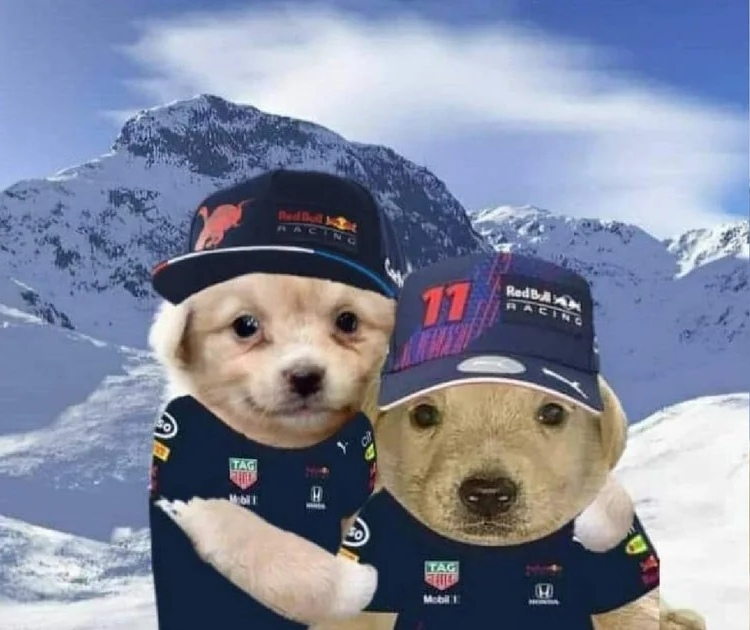

Se que esta forma de hacer estas cosas no es tan común y tampoco es la gran cosa pero esta vez me gusto hacer algo diferente y algo que no se mira en estas situaciones
De nuevo estoy en la misma situacion de siempre, mis sentimientos hacia la misma persona, se que sera algo dificil pero en verdad te quiero hacer la mujer mas feliz del mundo, no sé por donde empezar pero lo que te aseguro 100% que lo que siento es real y tengo muchas cosas que decirte
Se que no soy perfecto, se que a veces peleamos, se que a veces mis actitudes son malas, en fin muchas cosas que dejo pasar, pero te prometo hacer todo lo posible para hacerte feliz. Quiero que sepas que te amo con todo mi coraron y que siempre estaré aquí para ti en las buenas y en las malas
Se que tu tenes el pensamiento que entre amigos no puede haber nada, por lo contrario en mi pensamiento es algo que podria pasar porque en la etapa de amistad es de tenernos confianza algo que es super importante en una relacion. Creeme que hago hasta lo imposible para que te des cuenta que yo seria una buena opcion, dejando por un lado las bromas de "Infiel" Yo que no he tenido una relacion tan seria no seria capaz de hacer algo malo de ese tipo. Porque si yo se que me costo mucho esfuerzo en hacer las cosas no las voy a dejar perder de esta manera tan fea
A mi me gustaria quitarte de tu cabeza el pensamiento de "Todos son iguales o Todos Mienten" porque yo te quiero demostrar que en verdad en el mundo hay hombres buenos y yo soy uno de esos, seria incapaz de causarte algun daño. Quisiera en verdad que te quitaras el miedo que entre amigos no puede hacer algo mas que la amistad y me gustaria que yo fuera esa primera vez

Siguiente Paso...
